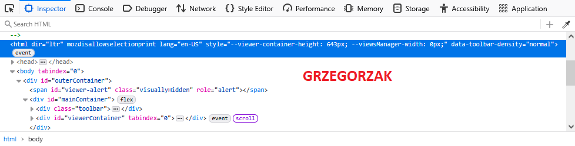
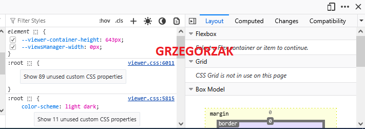

1) Inspektor Elements [zakładka] to podstawowe narzędzie do edycji wbudowane w
przeglądarkę np. Firefox.
Służy głównie do:
- podglądu struktury HTML strony
- edycji HTML i CSS „na żywo”
- sprawdzania stylów (kolory, marginesy, fonty)
- zaznaczania elementów na stronie

1) Pasek dewelopera Web Developer Tools (DevTools)
Jest do dyspozycji użytkownika po zainstalowaniu przeglądarki.
To cały zestaw narzędzi, który zawiera wiele zakładek, m.in.:
- Elements / Inspector ← (to ten Inspektor opis patrz poniżej)
- Console (błędy i logi JavaScript)
- Network (ruch sieciowy)
- Sources (debugowanie kodu)
- Application / Storage (cookies, localStorage itd.)
To rozbudowane środowisko, które w 2026 roku staje się "rozszerzeniem IDE", oferując AI, analizę
pamięci, zaawansowane dławienie sieci i ścisłą integrację z kodem źródłowym. Pozwala szybciej
tworzyć lepsze witryny. Dokładny opis patrz Nowe możliwości Web Developer Tools.
